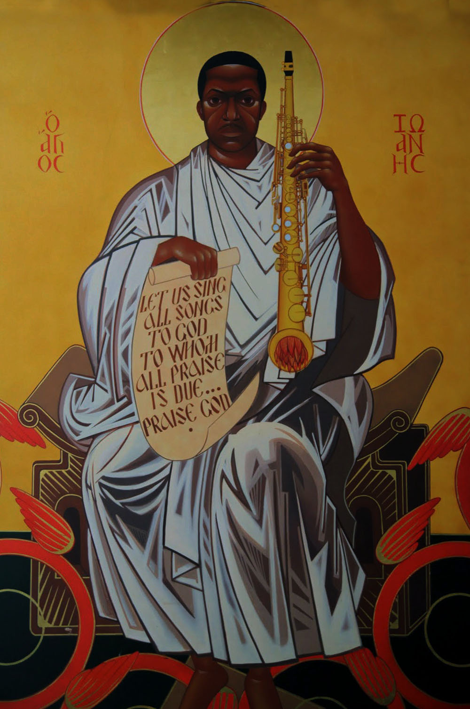

John William Coltrane, also known as "Trane" (September 23, 1926 – July 17, 1967), was an American jazz saxophonist and composer. Working in the bebop and hard bop idioms early in his career, Coltrane helped pioneer the use of modes in jazz and was later at the forefront of free jazz. He led at least fifty recording sessions during his career, and appeared as a sideman on many albums by other musicians, including trumpeter Miles Davis and pianist Thelonious Monk.

“One positive thought produces millions of positive vibrations.”
As his career progressed, Coltrane and his music took on an increasingly spiritual dimension. Coltrane influenced innumerable musicians, and remains one of the most significant saxophonists in music history. He received many posthumous awards and recognitions, including canonization by the African Orthodox Church as Saint John William Coltrane and a special Pulitzer Prize in 2007. His second wife was pianist Alice Coltrane and their son Ravi Coltrane is also a saxophonist.